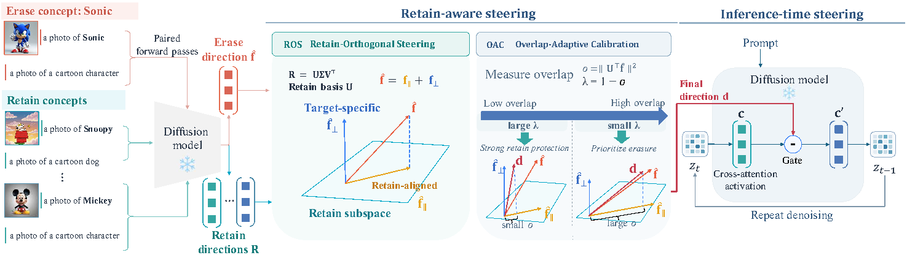
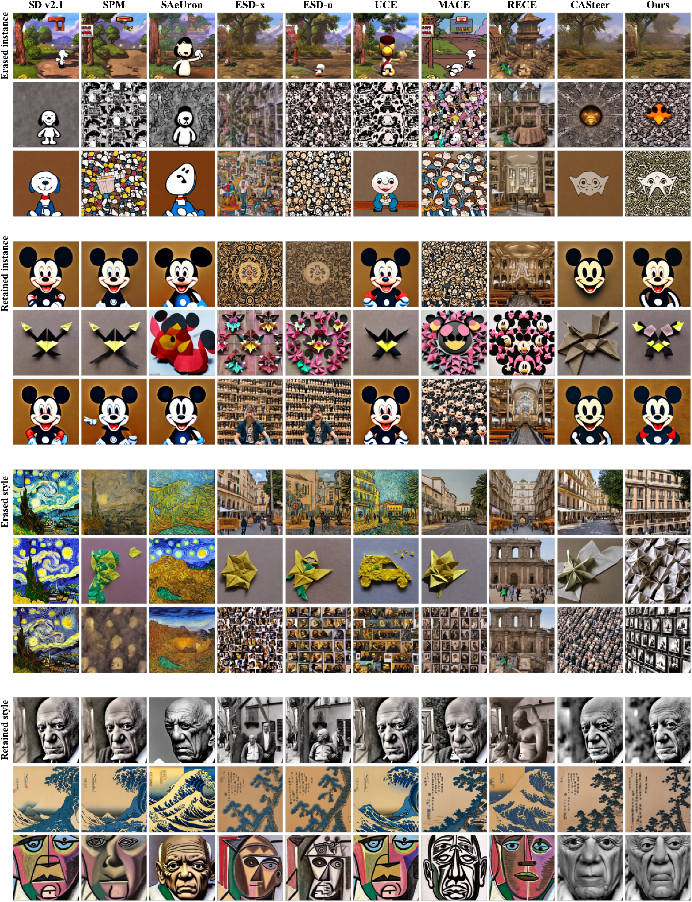

Erase the target while protecting what shares its representation. RASteer refines activation steering using the concepts we want to retain.
Motivation
A diffusion model may need to stop generating an unsafe concept, a recognizable character, or an artistic style while preserving its other capabilities. Activation steering makes these changes during inference, keeping the original model weights intact. But a direction built only from the target can also suppress concepts that should remain.
Key observation
Target and retained concepts share components in the model's representation space. In our analysis, steering to erase Sonic can turn a retained Snoopy into an ordinary dog. Changing the activation threshold alone does not resolve the overlap: it trades false triggers on retained concepts for missed target activations. Completely removing shared components has the opposite problem and can leave the target recognizable.
Method
RASteer incorporates retained concepts into the erasure direction rather than relying only on the target. Two complementary operations make the intervention more selective while preserving enough direction to erase the target.
Retain Orthogonal Steering
Construct a retain subspace from the steering vectors of concepts to preserve. Reduce the components of the target direction that align with this subspace, limiting collateral damage to retained concepts.
Overlap Adaptive Calibration
Measure the overlap at each layer and denoising step, then adjust how strongly the shared components are removed. This avoids the weak erasure that can result from full projection.
The method requires no training or learnable parameters. Model weights stay fixed, so steering can be enabled or disabled during generation.

Results
Exposed body part detections on I2P with Stable Diffusion v1.4, compared with the unedited model.
Evaluations on Stable Diffusion v1.4, v1.5, v2.1, and SDXL.
We evaluate unsafe content, instance, and artistic style erasure alongside preservation of retained concepts and general COCO generation. RASteer matches or outperforms the evaluated steering and weight editing baselines in the balance between erasure and preservation. Qualitative comparisons show target removal while keeping retained subjects, styles, and scene structure recognizable.

Citation
@misc{wu2026rasteer,
title={RASteer: Retain-Aware Activation Steering for Concept Erasure in Diffusion Models},
author={Yongliang Wu and Haori Lu and Yulun Wu and Jinqi Luo and Xingyu Zhu and Yaoyao Liu},
year={2026},
eprint={2610.01969},
archivePrefix={arXiv},
primaryClass={cs.CV},
url={https://arxiv.org/abs/2610.01969}
}